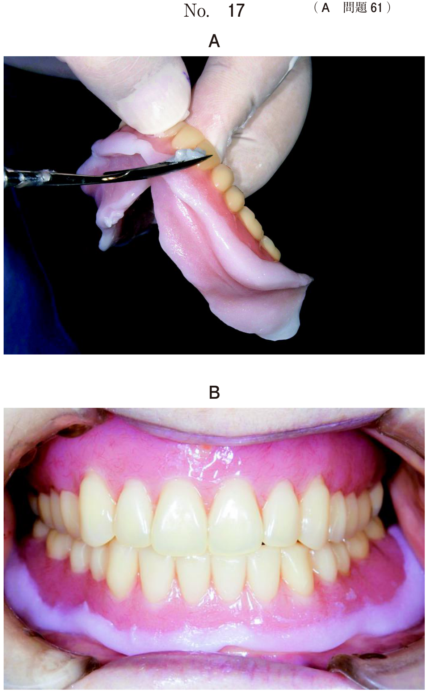
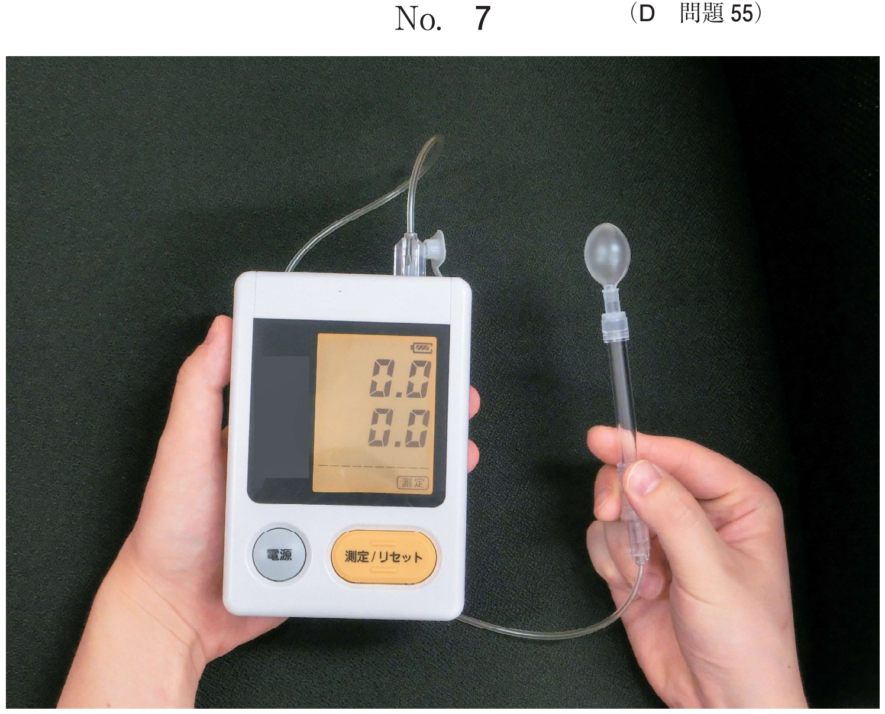
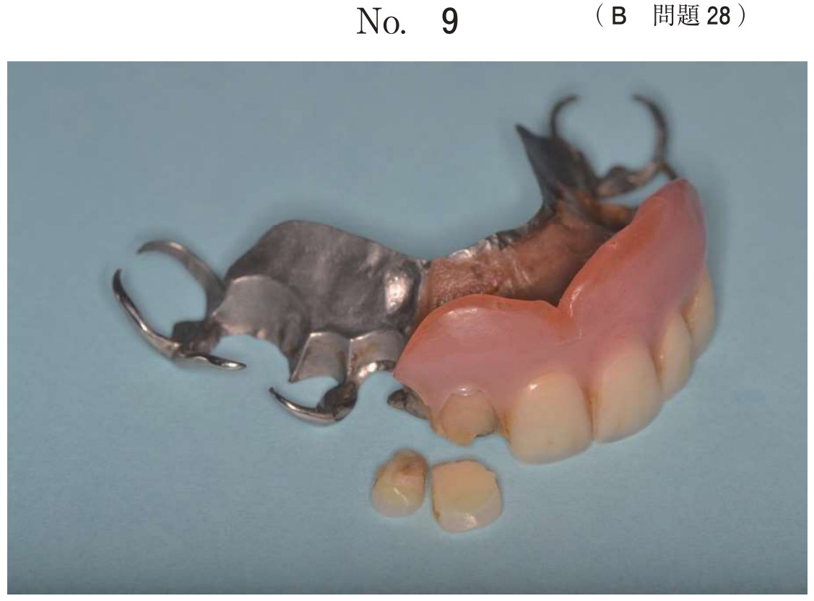

その他の唾液腺疾患
唾石症
唾液腺導管内に結石が形成される疾患で、唾液腺疾患のもっとも頻度の高い疾患の一つである。
好発部位
顎下腺に80〜92%が発生する。耳下腺は6〜19%、舌下腺や小唾液腺にはまれである。
顎下腺に多い理由
- Wharton管が長く、外傷や刺激を受けやすい
- 顎下腺唾液は粘稠でアルカリ性
- カルシウム塩やリン酸塩濃度が高い
- ムチンを豊富に含む粘液性の唾液
唾石の性状と成分
- 主成分：リン酸カルシウム（約70%）、炭酸カルシウム（約10%）
- 腺体内では球形、導管では導管の形態に沿って細長い形
- 大きさは10mm前後のものが多い
臨床所見
- 唾疝痛（salivary colic）：食事時に排泄管の閉塞による急激な疼痛
- 唾液腺部の腫脹：食事摂取時に出現し、食後に消失
- 二次感染を起こすと持続的な腫脹・疼痛
診断
- エックス線撮影（咬合法）で石灰化の存在を確認
- CT：唾石の位置を確認
- 唾液腺造影：閉塞部位の確認
治療
| 唾石の位置 | 術式 |
|---|---|
| 排泄管（口腔内に近い） | 口腔内から唾石摘出 |
| 腺体内（深部） | 口腔外から顎下腺摘出 |
- 顔面神経下顎辺縁枝：損傷 → 下唇の運動障害（口角が下がる）
- 舌神経：損傷 → 舌の知覚障害（しびれ）＋味覚障害
- 舌下神経：損傷 → 舌の運動障害
- Wharton管：術中に切離する
- 広頸筋：術中に切離する
過去問：唾石症の手術
42歳の男性。右側顎下部の腫脹を主訴として来院した。3年前から食事時に腫脹と疼痛を繰り返しているという。検査の結果、口腔外から手術を行うこととした。初診時の顔貌写真（別冊No.24A）、エックス線画像（別冊No.24B）及びCT（別冊No.24C）を別に示す。 手術の前に患者に説明すべき術後合併症はどれか。2つ選べ。

b 「下唇の感覚が鈍くなることがあります」
c 「舌の右半分がしびれることがあります」
d 「耳たぶの感覚が鈍くなることがあります」
e 「舌をまっすぐ前に出せなくなることがあります」
【解説】顎下腺摘出術の合併症。a：顔面神経下顎辺縁枝の損傷 → 下唇の運動障害（○）。b：下唇の感覚はオトガイ神経支配で顎下腺手術では損傷しない（×）。c：舌神経の損傷 → 舌の知覚障害（○）。d：耳たぶの感覚は大耳介神経支配で耳下腺手術の合併症（×）。e：舌の運動障害は舌下神経損傷だが顎下腺摘出では損傷リスクは低い（×）。
45歳の男性。左側顎下部の疼痛と腫脹を主訴として来院した。1年前から同部に一過性の疼痛を自覚していたがそのままにしていたところ、1か月前から食事中に疼痛を伴う腫脹が出現するようになったという。診断をした結果、口腔外から手術を行うこととした。初診時のエックス線画像（別冊No.33A）と CT（別No.33B）を別に示す。 術中に切離するのはどれか。2つ選べ。

b 舌神経
c 顎舌骨筋
d 舌下動脈
e Wharton管
【解説】顎下腺摘出術で「術中に切離するもの」を問う。広頸筋は皮膚切開後に最初に切離する筋（a○）。Wharton管は顎下腺の排泄管であり切離が必要（e○）。舌神経は温存すべき（b×）。顎舌骨筋は切離せず剥離する（c×）。舌下動脈は通常損傷しない（d×）。
唾石症患者の初診時の CT（別冊No.11A）と唾石摘出術中の口腔内写真（別冊No.11B）を別に示す。 矢印で示す神経の損傷によって生じるのはどれか。1つ選べ。

b 舌の味覚障害
c 下唇の運動障害
d 顎舌骨筋の運動障害
e オトガイ部の感覚異常
【解説】口腔内から唾石を摘出する手術中に、Wharton管に近接して走行する舌神経を損傷するリスクがある。舌神経は知覚＋鼓索神経由来の味覚線維を含むため、損傷すると舌の味覚障害が生じる。舌の運動障害は舌下神経損傷（a×）、下唇の運動障害は顔面神経下顎辺縁枝損傷（c×）。
右側口底部の進和感を主訴として来院した患者の、初診時の口腔内写真（別冊No.15A）とエックス線画像（別冊No.15B）を別に示す。 インフォームドコンセントにおいて、治療を行わない場合の説明で適切なのはどれか。1つ選べ。

b 「顎の下が腫れる可能性があります」
c 「口が開かなくなる可能性があります」
d 「舌が動きにくくなる可能性があります」
e 「舌の感覚が鈍くなる可能性があります」
【解説】口底部のエックス線で唾石が確認される唾石症。治療を行わない場合、唾石による排泄管閉塞で唾液が貯留し、顎下腺が腫脹する（唾疝痛）。さらに二次感染を起こすと顎下部の蜂窩織炎に発展する可能性がある。口腔乾燥は片側の唾石では通常生じない。
唾液分泌検査
唾液分泌量の測定法
| 検査法 | 方法 | 基準値 |
|---|---|---|
| Saxonテスト | ガーゼを口腔内に入れ2分間咀嚼、重量増加を測定 | 2g以上/2分 |
| ガムテスト | ガムを10分間咀嚼、排出された唾液量を測定 | 10ml以上/10分 |
| 吐唾法 | 安静時に唾液を吐き出して測定 | ― |
唾液腺機能検査
| 検査法 | 方法 | 目的 |
|---|---|---|
| 唾液腺シンチグラフィ | 99mTcO4−を静注し、唾液腺への集積・排出を観察 | 唾液腺分泌機能の評価 |
| 唾液腺造影 | 導管から造影剤を注入してX線撮影 | 導管・腺体の形態評価 |
- 使用するもの：ガーゼ（ガムではない！）
- 基準値：2g以上/2分
- Sjögren症候群の診断基準の一つ
過去問：唾液分泌検査
Saxon テストで用いるのはどれか。1つ選べ。
b ガ ム
c 濾 紙
d ガーゼ
e グミゼリー
【解説】Saxonテストはガーゼを口腔内に含ませて2分間咀嚼し、唾液で増加した重量を測定する。ガムを用いるのはガムテスト。濾紙を用いるのはSchirmer試験（涙液検査）。
60歳の女性。口腔乾燥感を主訴として来院した。 唾液分泌検査の結果、 0.5g/2分（基準値：2.0g以上/2分）で唾液腺機能低下と評価された。 実施した検査はどれか。1つ選べ。
b Saxonテスト
c 蛍光色素試験
d Schirmer試験
e ローズベンガル試験
【解説】「g/2分」という単位と基準値2.0g以上からSaxonテストと判断できる。ガム試験の単位はml/10分。Schirmer試験とローズベンガル試験は眼科の検査。
唾液分泌機能を調べるのはどれか。1つ選べ。
b 造影CT
c 血管造影検査
d シンチグラフィ
e 反復唾液嚥下テスト
【解説】唾液腺シンチグラフィ（99mTcO4−）は唾液腺への集積と排出パターンを観察することで唾液腺分泌機能を評価できる。MRI・造影CTは形態的評価。反復唾液嚥下テスト（RSST）は嚥下機能の検査。
Sjögren症候群
唾液腺と涙腺を標的とする自己免疫疾患で、口腔乾燥と眼球乾燥を主症状とする。
疫学
- 好発年齢：30〜50歳代
- 性差：女性に好発（男女比 1：20）
- 原発性（単独）と二次性（SLE、関節リウマチなどに合併）がある
診断基準（日本改訂、1999年）
以下の4項目のうちいずれか2項目以上を満たせば診断する。
| 項目 | 検査内容 |
|---|---|
| 1. 病理組織検査 | 口唇腺生検：リンパ球浸潤（1 focus/4mm2以上） |
| 2. 口腔検査 | 唾液腺造影（apple tree appearance）、唾液分泌量低下（ガム試験10ml以下/10分、Saxon 2g以下/2分）、唾液腺シンチグラフィで機能低下 |
| 3. 眼科検査 | Schirmer試験（5mm/5分以下）、ローズベンガル試験、蛍光色素試験 |
| 4. 血液検査 | 抗SS-A/SS-B抗体陽性 |
臨床所見
- 口腔乾燥：舌乳頭の萎縮、平滑舌、口腔カンジダ症の合併
- 唾液腺腫脹：30〜50%にみられ、耳下腺に多い
- 眼球乾燥：眼の異物感、かゆみ
唾液腺造影所見
Apple tree appearance：びまん性の点状〜顆粒状陰影を示す特徴的所見。
過去問：Sjögren症候群
Sjogren症候群の診断に用いるのはどれか。2つ選べ。
b 顎下腺の生検
c 交差適合試験
d Schirmer 試験
e リンパ球表面抗原検査
【解説】Saxonテストは唾液分泌量の測定で口腔検査項目に含まれる（a○）。Schirmer試験は涙液量の測定で眼科検査項目（d○）。生検は口唇腺（顎下腺ではない、b×）。交差適合試験は輸血の検査（c×）。
72歳の女性。口腔乾燥を主訴として来院した。数年前から気付いていたが放置していたという。血液検査の結果、抗SS-A抗体と抗SS-B抗体とは陽性、Saxonテスト0.8g/2分（基準値：2g以上/2分）、ガム試験3ml/10分（基準値：10ml以上/10分）であった。初診時の舌の写真（別冊No.45）を別に示す。 次に行うべき口腔検査はどれか。1つ選べ。

b Schirmer試験
c 舌粘膜病理組織検査
d ローズベンガル試験
e 唾液腺シンチグラフィ
【解説】抗SS-A/SS-B抗体陽性（血液検査項目）と唾液分泌量低下（Saxonテスト、ガム試験）は確認済み。診断基準では口腔検査項目として唾液腺造影・唾液分泌量低下・唾液腺シンチグラフィのいずれかの陽性所見が必要。次に行うべき「口腔検査」として唾液腺シンチグラフィが適切。Schirmer試験・ローズベンガル試験は眼科検査であり「口腔検査」ではない。
口腔乾燥症
原因の分類
| 分類 | 原因 | 機序 |
|---|---|---|
| 唾液腺の組織障害 | 放射線治療、Sjögren症候群、GVHD | 唾液腺の破壊・萎縮 |
| 薬剤性 | 抗コリン薬、抗うつ薬、抗ヒスタミン薬、抗精神病薬 | ムスカリン受容体拮抗など |
| 全身疾患 | 糖尿病、脱水 | 体液量減少、自律神経障害 |
| 神経性 | 精神的緊張・ストレス | 交感神経優位による分泌抑制 |
口腔乾燥症の併発症
- 平滑舌（舌乳頭の萎縮）
- 味覚異常
- 口腔カンジダ症
- う蝕の多発（唾液の自浄作用低下）
過去問：口腔乾燥症
口腔乾燥の原因とその機序の組合せで正しいのはどれか。2つ選べ。
b 慢性GVHD ーーーー 唾液腺の萎縮
c 精神的緊張 ーーーー 副交感神経優位
d 抗うつ薬服用 ーーーー ムスカリン受容体拮抗
e Sjögren 症候群 ーーーー Stensen 管の消失
【解説】慢性GVHDは唾液腺の組織障害（萎縮）による口腔乾燥（b○）。抗うつ薬（三環系抗うつ薬）は抗コリン作用によりムスカリン受容体を拮抗し唾液分泌を抑制する（d○）。糖尿病の口腔乾燥はムチン分泌亢進ではなく脱水や自律神経障害による（a×）。精神的緊張は交感神経優位（副交感神経ではない、c×）。Sjögren症候群はStensen管の消失ではなく唾液腺の自己免疫性破壊による（e×）。
唾液腺の組織障害により口腔乾燥症を引き起こすのはどれか。2つ選べ。
b 放射線治療
c 鉄欠乏性貧血
d 精神的ストレス
e 移植片対宿主病
【解説】「組織障害」による口腔乾燥を問う。放射線治療は唾液腺の不可逆的破壊（b○）。GVHD（移植片対宿主病）は唾液腺への免疫学的攻撃による萎縮（e○）。向精神薬は薬理学的な分泌抑制であり組織障害ではない（a×）。精神的ストレスは交感神経優位による機能的抑制（d×）。
口腔乾燥症を併発することが多いのはどれか。2つ選べ。
b 胃潰瘍
c 糖尿病
d 脂質異常症
e Sjögren症候群
【解説】糖尿病は脱水や自律神経障害により口腔乾燥を生じる（c○）。Sjögren症候群は唾液腺の自己免疫性破壊が本態（e○）。
口腔乾燥症に併発するのはどれか。すべて選べ。
b 味覚異常
c 口腔扁平苔癬
d 口腔カンジダ症
e 慢性再発性アフタ
【解説】口腔乾燥により舌乳頭が萎縮して平滑舌（a○）、味覚異常（b○）、自浄作用低下による口腔カンジダ症（d○）が生じる。口腔扁平苔癬やアフタは口腔乾燥との直接的な因果関係は乏しい。
ウイルス性唾液腺炎・IgG4関連疾患
流行性耳下腺炎（ムンプス）
- ムンプスウイルスによる感染症
- 2〜6歳の小児に好発、飛沫感染
- 両側性の耳下腺腫脹が特徴的（片側性のこともある）
- 発症後4〜5日まで腫脹が持続、潜伏期間は2〜3週間
- 感染症法で5類感染症
IgG4関連疾患
- 血清IgG4高値と、IgG4陽性形質細胞の浸潤を特徴とする疾患
- Mikulicz病（唾液腺・涙腺の対称性腫脹）の一部が含まれる
Sjögren症候群とIgG4関連疾患の比較
| 項目 | Sjögren症候群 | IgG4関連疾患 |
|---|---|---|
| 性差 | 女性に好発 | 男性にやや多い |
| 唾液腺の硬さ | 弾性軟 | 弾性硬 |
| 腫脹の経過 | 消退することがある | 持続的 |
| 唾液分泌低下 | 著しい | 比較的軽度 |
| 圧痛 | なし | なし |
壊死性唾液腺化生
- 硬口蓋に好発する潰瘍性病変
- 唾液腺小葉の壊死と扁平上皮化生を特徴とする
- 悪性腫瘍との鑑別が重要（特に粘表皮癌）
- 自然治癒することが多い
過去問：その他の唾液腺疾患
両側耳下腺部の腫脹を主訴として来院した患者の医療面接結果の一部を表に示す。 考えられるのはどれか。1つ選べ。
b Frey症候群
c Warthin腫瘍
d IgG4関連疾患
e 流行性耳下腺炎
【解説】両側耳下腺の急性腫脹で、医療面接から流行性耳下腺炎（ムンプス）を考える。唾石症は通常片側性。Warthin腫瘍は両側性もあるが急性経過ではない。IgG4関連疾患は持続的な弾性硬の腫脹。Frey症候群は耳下腺手術後の発汗異常。
Sjögren症候群と比較したIgG4関連疾患の唾液腺炎の特徴はどれか。2つ選べ。
b 唾液腺の圧痛を伴う。
c 唾液腺は弾性硬である。
d 唾液腺の腫脹が持続する。
e 唾液分泌機能の低下が著しい。
【解説】IgG4関連疾患の唾液腺炎は、Sjögren症候群と比較して唾液腺が弾性硬（c○）で、腫脹が持続的（d○）である点が特徴。女性に好発するのはSjögren症候群の特徴（a×）。唾液分泌機能の低下が著しいのもSjögren症候群（e×）。
唾液腺に腫脹を呈する疾患はどれか。2つ選べ。
b Marfan症候群
c Sjögren症候群
d Mikulicz症候群
e Peutz-Jeghers症候群
【解説】Sjögren症候群は唾液腺・涙腺の自己免疫性疾患で唾液腺腫脹を呈する（c○）。Mikulicz症候群（現在はIgG4関連疾患に含まれる）は唾液腺・涙腺の対称性腫脹（d○）。Down症候群は染色体異常、Marfan症候群は結合組織疾患、Peutz-Jeghers症候群は消化管ポリポーシスで、唾液腺腫脹は生じない。